Show other papers
A Complete and Natural Rule Set for Multi-Qudit Clifford Circuits in All Odd Prime Dimensions
Authors: Xiaoning Bian, Sarah Meng Li, Neil J. Ross, John van de Wetering, Yuming Zhao
Type: theory · Category: quantum information and computing · PDF: https://arxiv.org/pdf/2609.40106v1
Analysis basis: full PDF text, analyzed in chunks
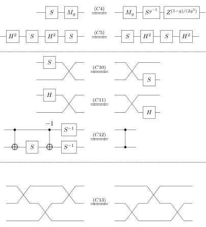
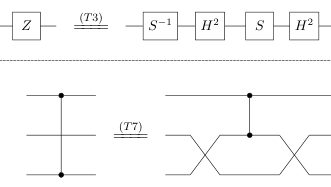
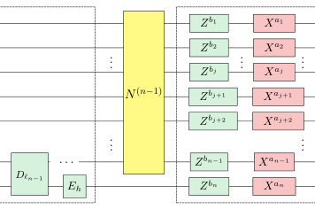
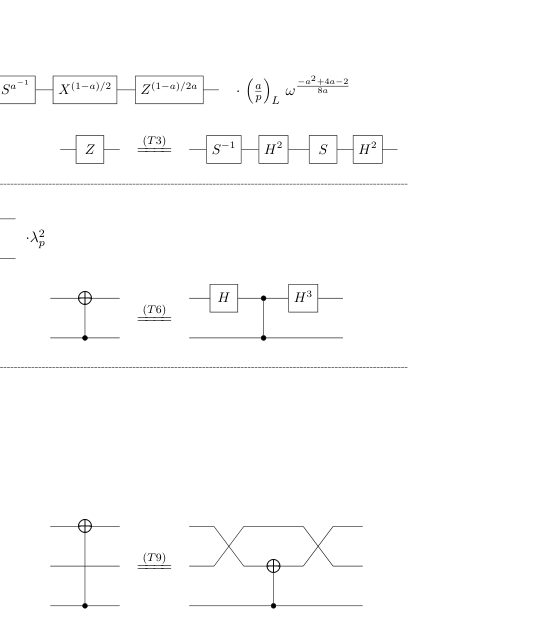
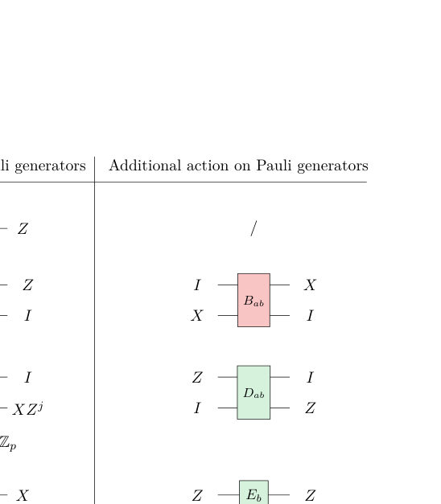
Summary. This paper develops a complete and rigorous set of 16 rewrite rules governing multi-qudit Clifford circuits in any odd prime dimension. By mapping the problem to the symplectic group, the authors establish a unique circuit normal form. This provides a powerful, systematic algebraic framework for simplifying and analyzing quantum computations in qudit systems.
Why it may be interesting. This work provides fundamental algebraic tools for simplifying and analyzing quantum circuits, which is crucial for developing efficient quantum algorithms and understanding the underlying structure of quantum gates in high-dimensional systems.
Detailed structure
Main problem. The primary goal is to establish a complete and natural set of rewrite rules (an equational theory) for multi-qudit Clifford circuits operating in odd prime dimensions.
Main result. The authors present a complete set of 16 rewrite rules that are sound and complete for transforming any multi-qudit Clifford circuit into a unique normal form.
Method. The methodology involves working at the symplectic level, utilizing the isomorphism between the symplectic group $ ext{Sp}(2n, \mathbb{Z}_p)$ and the Clifford group quotient, and constructing a unique circuit normal form.
Model / system. The system under study is multi-qudit quantum computation using Clifford circuits in dimensions $p$, where $p$ is an odd prime. The theory is built upon the structure of the Pauli group and its relation to the symplectic group.
Key observables. The structure of the circuit normal form, the resulting rewrite rules (e.g., 16 rules), and the action of specific gates like $ ext{SWAP}$, $ ext{CX}$, and $ ext{CZ}$.
Important parameters / regimes. The odd prime dimension $p$, and the number of qudits $n$.
Assumptions / limitations. The analysis initially simplifies by ignoring global phases, focusing on the projective Clifford group $bC_n$, and relies on the established correspondence with the symplectic group.
Figures summary. Figures illustrate the 16 complete rewrite rules, derived generators, and the inductive construction of the circuit normal form, showing alternating Z-normal and X-normal layers.
Paper structure. The paper systematically derives the normal form by first working at the symplectic level, establishing unique normal boxes ($W_Z, W_X$) for Pauli operators, and finally lifting these relations to the full Clifford group structure via Pauli corrections.
Abstract
We present a complete set of $16$ rewrite rules for multi-qudit Clifford circuits in all odd prime dimensions. Completeness means that any two Clifford circuits representing the same linear map can be rewritten into each other using these rules. Each rule involves at most three qudits and admits an intuitive interpretation. To establish completeness, we first work at the symplectic level, using the isomorphism between the symplectic group $\mathrm{Sp}(2n,\mathbb{Z}_d)$ and the quotient of the Clifford group by the Pauli group. We construct a circuit normal form that captures the stabiliser tableau of a Clifford operator and is unique up to Pauli correction. Using this normal form, we derive a complete set of symplectic relations, which we then lift to Clifford relations by incorporating Pauli corrections. We also formally verify completeness up to global phase in the Agda proof assistant.
A Dynamical Theory of LoRA in Continual Learning
Authors: Théo Marchetta, Filippo Alessandroni, Alessandro Breccia, Alessandro Ingrosso, Federica Gerace
Type: theory · Category: disordered systems and neural networks · PDF: https://arxiv.org/pdf/2609.39367v1
Analysis basis: full PDF text, analyzed in chunks
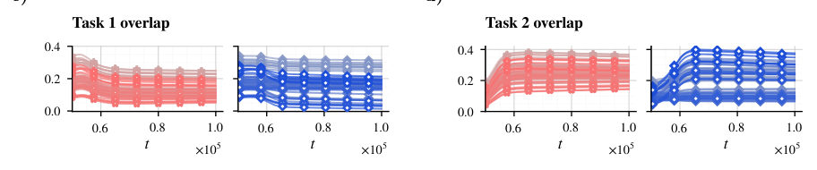
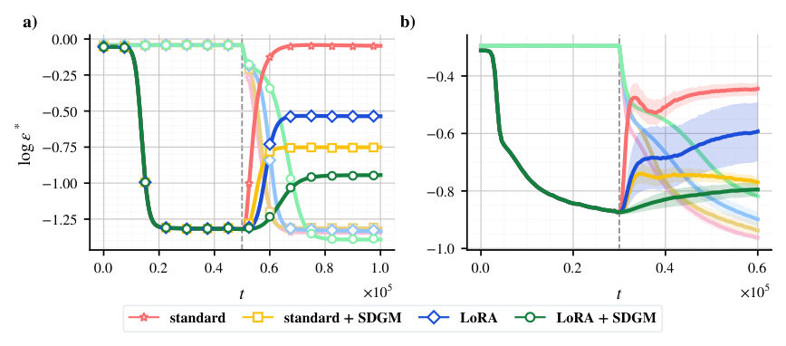
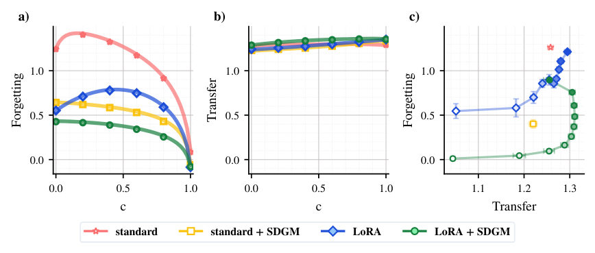
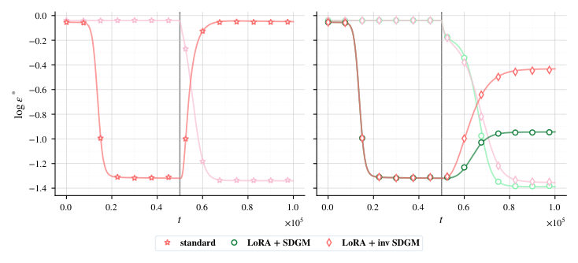
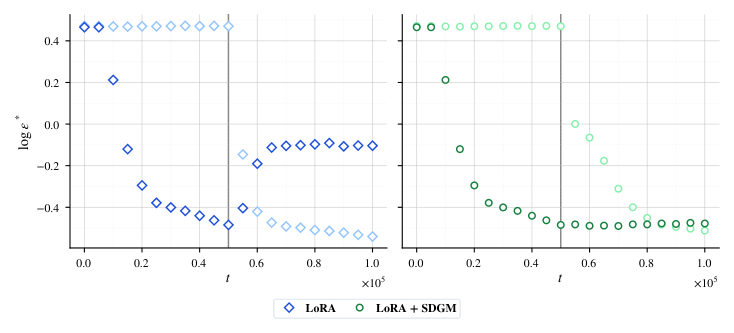
Summary. This paper provides a dynamical, geometric theory for understanding how Low-Rank Adaptation (LoRA) functions during continual learning. By deriving a closed system of ODEs, the authors show that LoRA manages interference but slows adaptation, proposing a masking strategy that explicitly protects crucial features to minimize catastrophic forgetting.
Why it may be interesting. The mathematical framework of deriving deterministic ODEs from complex, high-dimensional neural network dynamics mirrors techniques used in analyzing mean-field behavior in complex physical systems, such as spin glasses or neural quantum states.
Detailed structure
Main problem. The paper investigates the dynamics of Low-Rank Adaptation (LoRA) in the context of continual learning, aiming to understand how low-rank updates affect catastrophic forgetting.
Main result. LoRA reduces interference with previously learned features but slows adaptation to new tasks; furthermore, a state-dependent masking strategy can significantly mitigate forgetting by protecting task-specific representations.
Method. The authors derive a closed system of ordinary differential equations (ODEs) by analyzing the high-dimensional online-learning limit of a solvable two-task teacher-student model.
Model / system. The model is a two-layer fully connected network trained sequentially on Task 1 and then fine-tuned on Task 2 using LoRA updates ($\Delta J = BA$). The analysis tracks macroscopic order parameters (overlaps) between the student, the frozen Task 1 representation, and the two task teachers.
Key observables. Generalization errors ($\epsilon^*$) on both tasks, and various macroscopic order parameters (overlaps) quantifying feature retention and transfer.
Important parameters / regimes. Task similarity ($c$), adapter rank ($L$), and the masking strategy parameters derived from feature importance.
Assumptions / limitations. The analysis is performed in the high-dimensional online-learning limit ($N o \infty$), and some sections assume a symmetric regime for mathematical tractability.
Figures summary. Figures compare generalization and overlap dynamics for LoRA versus full fine-tuning, demonstrating that LoRA and structured masking methods maintain better Task 1 retention while adapting to Task 2.
Paper structure. The paper establishes the theoretical framework by deriving ODEs for the system dynamics, analyzes the performance differences between standard fine-tuning and LoRA, and then introduces and validates a state-dependent masking strategy to further reduce forgetting.
Abstract
Despite the widespread use of Low-Rank Adaptation (LoRA), little is known about its dynamics in continual learning and the mechanisms by which low-rank updates affect catastrophic forgetting. We provide an asymptotically exact dynamical characterization of LoRA in a solvable two-task teacher-student model. In the high-dimensional online-learning limit, we derive a closed system of ordinary differential equations for a finite set of macroscopic order parameters, yielding exact expressions for the generalization errors throughout both the initial Task 1 learning phase and the subsequent LoRA fine-tuning on Task 2. The theory quantitatively matches finite-dimensional simulations and exposes two characteristic effects of LoRA: low-rank adaptation reduces interference with features learned on the first task, but its initialization slows adaptation to the second task. Building on this mechanistic picture, we analyze a state-dependent masking strategy that freezes hidden units carrying the strongest first-task representations and restricts adaptation to the complementary subspace. This structural partitioning markedly reduces forgetting, while preserving plasticity on the new task. Our framework further clarifies the role of adapter rank: transfer improves only up to the intrinsic dimensionality of the target task and saturates beyond it, while forgetting continues to grow with rank. These results provide a dynamical and geometric account of how low-rank adaptation organizes information across sequential tasks and are qualitatively reproduced on a sequential MNIST benchmark.
A General Theory of Multi-Resource Theories Involving Finite-Group Asymmetry
Authors: Yosuke Mitsuhashi, Hiroyasu Tajima
Type: theory · Category: quantum information and computing · PDF: https://arxiv.org/pdf/2609.40255v1
Analysis basis: full PDF text, analyzed in chunks
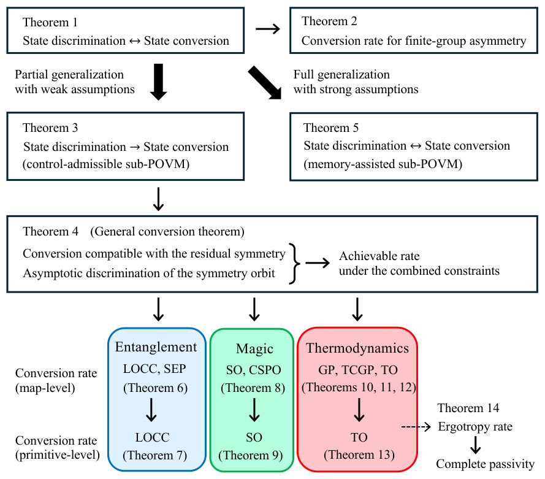
Summary. This paper establishes a general theory for multi-resource theories combining constraints, particularly finite-group asymmetry. It shows that combining these constraints does not incur an additional cost to the asymptotic state-conversion rate if the symmetry information is accessible. This has broad implications for understanding resource quantification in complex quantum systems.
Why it may be interesting. It provides rigorous mathematical tools to quantify how multiple physical constraints (like symmetry) interact when quantifying quantum resources, which is crucial for designing robust quantum protocols.
Detailed structure
Main problem. Developing a general theory for multi-resource theories that combine constraints, specifically focusing on the combination of finite-group asymmetry with other resource theories.
Main result. The conversion rate under combined constraints equals the minimum of the constituent rates if symmetry information is asymptotically accessible, showing no additional cost.
Method. Developing a general theoretical framework by analyzing state-conversion rates under multiple constraints, linking it to the accessibility of symmetry information.
Model / system. Quantum states ($ ho$) on multipartite systems, analyzed under various constraints like LOCC, thermal operations, and finite-group symmetries represented by unitary operators.
Key observables. Asymptotic state-conversion rate, symmetry information accessibility, ergotropy per copy.
Important parameters / regimes. The finite group $G$, the underlying resource theory (e.g., entanglement, magic), and the error tolerance ($\epsilon$).
Assumptions / limitations. The analysis assumes the group and underlying single-copy Hilbert spaces are fixed in the asymptotic limit, and that symmetry information can be extracted with vanishing error.
Figures summary. Figure 1 provides an overview summarizing the logical flow, establishing equivalences between state discrimination and state conversion under finite-group asymmetry.
Paper structure. The paper builds from establishing the equivalence between state discrimination and state conversion for finite-group asymmetry, generalizing this to a general conversion theorem, and then applying this to specific resource theories like LOCC and thermal operations.
Abstract
Resource theories provide a universal framework for quantifying properties of quantum states, such as entanglement, magic, athermality, and asymmetry, as resources under various constraints encountered in quantum science. Since realistic settings typically impose several constraints at once, it is important to study multi-resource theories that combine them. Among these, combinations with asymmetry are especially natural, as symmetry is fundamental and ubiquitous in physics. Here we develop a general theory that treats combinations of finite-group asymmetry with a broad range of resource theories in a unified manner. Our key observation is that the effect of combining the two constraints is governed by the accessibility of symmetry information under the underlying resource theory: whether the information needed for the conversion can be extracted from the input and used to control free operations. If this can be done with asymptotically vanishing error, we show that the conversion rate of the combined theory equals the smaller of the rates of the two constituent theories, so combining them incurs no additional cost. This condition holds for LOCC on arbitrary mixed multipartite states, magic-state conversion of multiqubit systems under Clifford symmetries, and Gibbs-preserving operations. Thermal operations, being time-translation covariant, can access only limited symmetry information, giving an additional compatibility condition between the two symmetries. We also analyze symmetry imposed on elementary operations rather than only on the resulting channel. We establish analogous results for LOCC and thermal operations under suitable assumptions, and for magic when the symmetry is represented by Pauli operators. Finally, we show that finite-group symmetry does not reduce the asymptotic ergotropy per copy and hence introduces no new completely passive states.
A Noise Operator Approach to Quantum Query Complexity and Time-Space Tradeoff Lower Bounds
Authors: Paul Beame, Blake Holman, Niels Kornerup
Type: theory · Category: quantum information and computing · PDF: https://arxiv.org/pdf/2609.40334v1
Analysis basis: full PDF text, analyzed in chunks
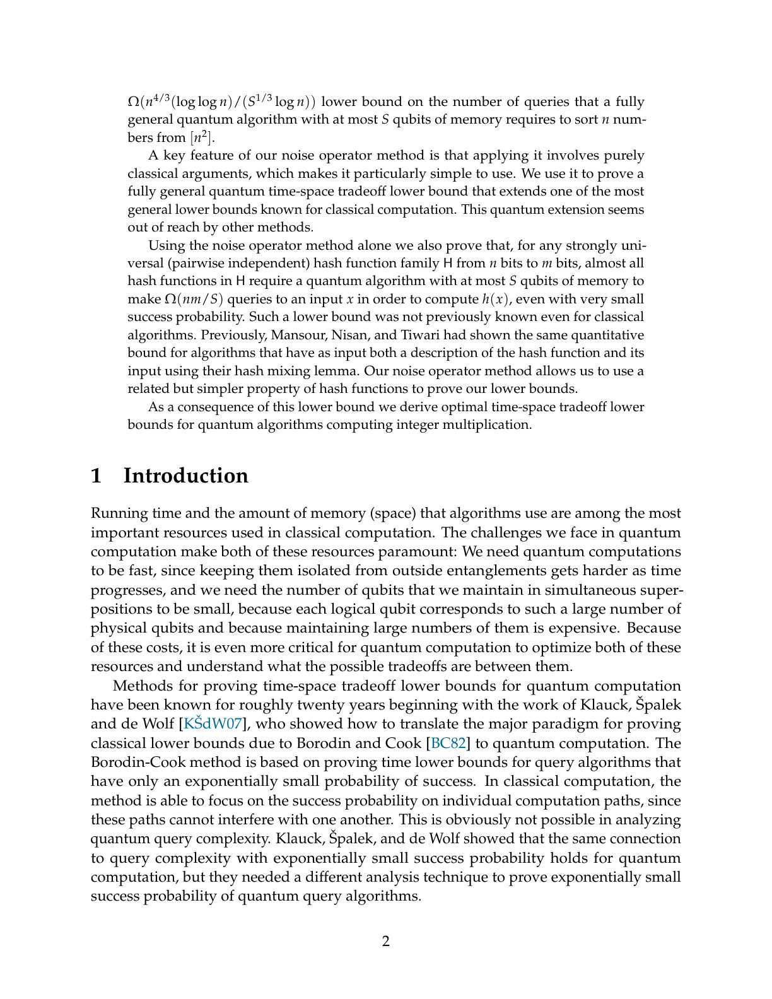
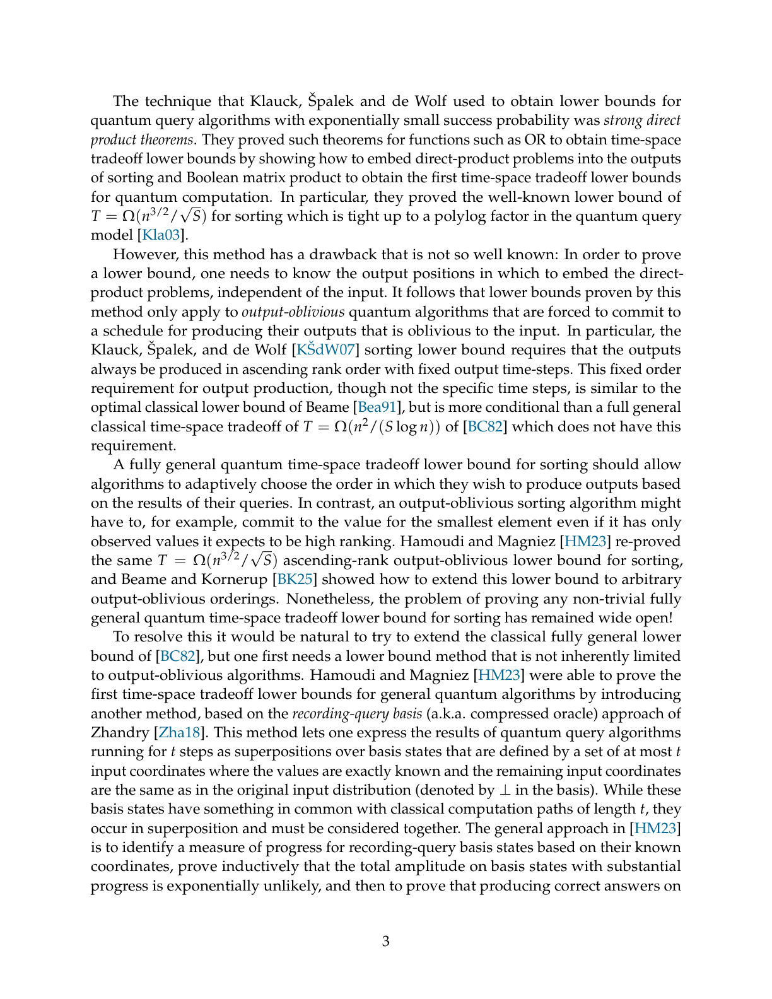
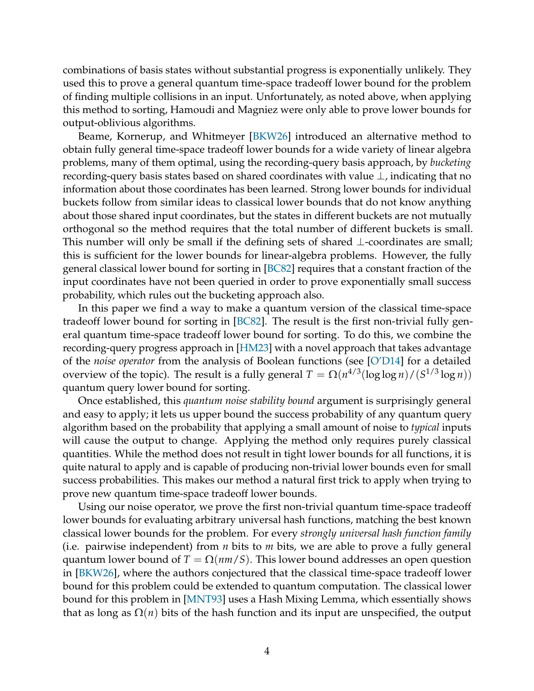
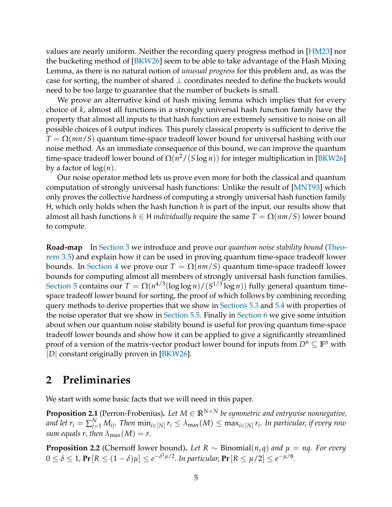
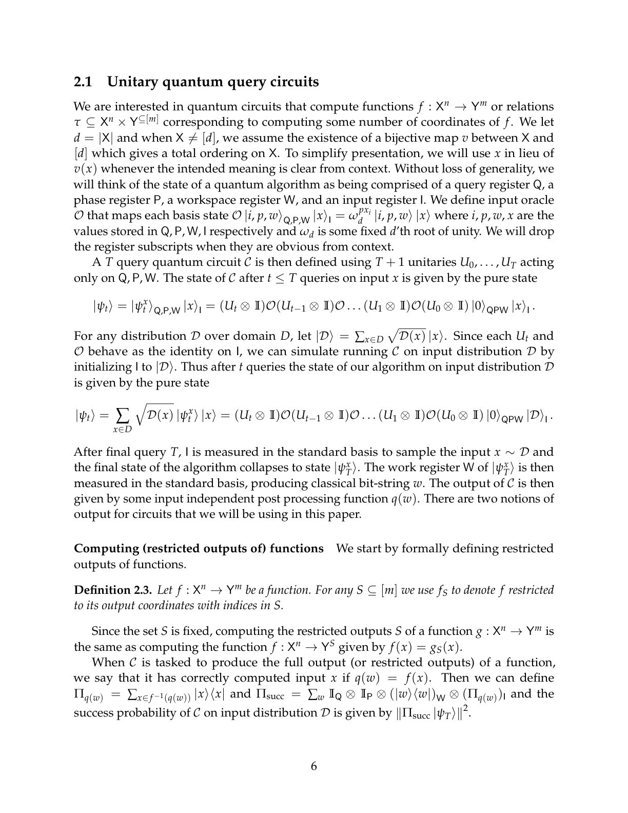
Summary. This work introduces a novel noise operator technique to derive general quantum time-space tradeoff lower bounds for quantum query algorithms. By applying this method to sorting and universal hashing, the authors establish previously unattainable lower bounds that overcome limitations of output-oblivious analysis. This advances the theoretical understanding of resource constraints in quantum computation.
Why it may be interesting. The noise operator method provides a powerful, purely classical tool to analyze quantum computational limits, which is highly relevant for understanding the fundamental resource trade-offs in quantum computation.
Detailed structure
Main problem. The paper aims to establish fully general, unconditional quantum time-space tradeoff lower bounds for computational tasks like sorting and universal hashing.
Main result. They prove the first fully general quantum time-space tradeoff lower bound for sorting and derive a general quantum lower bound $T = \Omega(nm/S)$ for universal hashing, matching classical bounds.
Method. The core method is the introduction of a novel analysis tool based on the quantum noise operator, which allows for purely classical arguments to bound the success probability of quantum query algorithms.
Model / system. The analysis is applied to quantum query algorithms operating in the unitary model, considering the trade-off between the number of queries (Time, T) and the number of memory qubits (Space, S).
Key observables. Query complexity (T), memory size (S), and the success probability of the quantum algorithm.
Important parameters / regimes. Input size $n$, memory size $S$, and the specific structure of the function being computed (e.g., sorting permutations or hash functions).
Assumptions / limitations. The method relies on combining the quantum noise stability bound with quantum recording query methods, and it is noted that the method does not yield tight bounds for all functions.
Paper structure. The paper introduces the noise operator approach, proves the quantum noise stability bound, and then applies this bound sequentially to derive lower bounds for universal hashing and finally for sorting.
Abstract
Time and space (memory) are two of the most important measures of cost in computation, even more so for quantum computation. In quantum computation our tools for proving unconditional tradeoffs between time and space are surprisingly limited. The first quantum time-space tradeoff lower bounds were proven for sorting by Klauck, Špalek and de Wolf. Unfortunately, their method is limited to proving output-oblivious lower bounds (i.e. the lower bounds only apply to algorithms with a non-adaptive output schedule) and other methods have yielded nothing beyond output-oblivious lower bounds for sorting.We prove the first fully general quantum time-space tradeoff lower bound for sorting. We do so by introducing a novel method based on the noise operator to add to the analysis toolkit for proving quantum query and time space tradeoff lower bounds. By combining our resulting quantum noise stability bound with quantum recording query methods, we prove an $Ω(n^{4/3} (\log \log n)/(S^{1/3} \log n))$ lower bound on the number of queries that a fully general quantum algorithm with at most $S$ qubits of memory requires to sort $n$ numbers from $[n^2]$. Applying our noise operator argument involves purely classical arguments, which makes it particularly simple to use. We also us it to prove that, for any strongly universal (pairwise independent) hash function family $H$ from $n$ bits to $m$ bits, almost all hash functions in $H$ require a quantum algorithm with at most $S$ qubits of memory to make $Ω(nm/S)$ queries to an input $x$ in order to compute $h(x)$, even with very small success probability. Previously, Mansour, Nisan, and Tiwari had shown a similar classical lower bound using their hash mixing lemma. Our noise operator method allows us to use a related but simpler property of hash functions to prove our lower bounds.
A Quantum Scaling Algorithm for Maximum-Weight Perfect Matching in General Graphs
Authors: Kourosh Mirsohi, Sandy Irani, Michael T. Goodrich
Type: theory · Category: quantum information and computing · PDF: https://arxiv.org/pdf/2609.39457v1
Analysis basis: full PDF text, analyzed in chunks
Summary. This paper introduces a quantum algorithm for the Maximum-Weight Perfect Matching problem in general graphs. It achieves a time complexity that surpasses the best known classical bounds, marking the first such asymptotic quantum improvement for this specific, challenging problem. The method operates within the QRAM model by quantumly accelerating key steps of the classical primal-dual matching framework.
Why it may be interesting. While the topic is graph theory, the core contribution is the development and analysis of a quantum algorithm achieving a provable asymptotic speedup over classical computation for a notoriously hard combinatorial problem.
Detailed structure
Main problem. Developing a quantum algorithm for the Maximum-Weight Perfect Matching (MWPM) problem in general graphs with integer edge weights.
Main result. The authors present a quantum algorithm running in time $\widetilde{O}(nm^{2/3} \log W)$, achieving an asymptotic speedup over the best known classical combinatorial bound for this problem.
Method. The algorithm adapts the classical LIQUIDATIONIST framework, utilizing the QRAM model and achieving speedup by quantumly accelerating the FREE VERTEX REDUCTION procedure.
Model / system. The problem is defined on general graphs with integer edge weights. The analysis is conducted within the Quantum Random Access Memory (QRAM) model, which allows for efficient quantum access to graph data.
Key observables. The running time complexity, specifically $eO(nm^{2/3} \log W)$ for the quantum algorithm versus $eO(m\sqrt{n} \log W)$ classically.
Important parameters / regimes. The upper bound on the magnitude of edge weights, $W$; the graph size parameters $n$ (vertices) and $m$ (edges).
Assumptions / limitations. The analysis assumes the QRAM model, accounts for classical updates, and relies on adapting the classical LIQUIDATIONIST algorithm structure.
Figures summary. Figures illustrate the blossom structure, augmenting paths in the contracted graph, and the tasks performed by the core subroutine, SEARCHONE.
Paper structure. The paper builds upon the classical LIQUIDATIONIST framework, detailing the quantum replacement for key procedures like SEARCHONE, and deriving the overall time complexity by optimizing parameters related to the number of iterations ($\tau$).
Abstract
Quantum speed-ups have been obtained for many fundamental graph problems, including most variants of matching. A notable exception, however, is the maximum-weight perfect matching (MWPM) problem in general graphs with integer edge weights, which is arguably the most challenging variant of matching. We present a quantum algorithm for MWPM in general graphs that runs in \( \widetilde{O}(n m^{2/3}\log W) \) time, where $W$ is an upper bound on the magnitude of the edge weights. This is an improvement over the best known classical combinatorial bound of \( \widetilde{O}(m\sqrt n \log W) \) in the dense regime, where $m\ge n^{3/2}$. To the best of our knowledge, this is the first quantum algorithm to obtain an asymptotic improvement over the best classical combinatorial algorithm for the MWPM problem in general graphs. The running time of our method accounts for QRAM initialization and access overheads up to polylogarithmic factors, as well as all classical updates to the data structures. At a high level, our algorithm is based on a classical framework due to Duan, Pettie, and Su, but our algorithm requires replacing certain classical tasks with quantum methods, alternative analysis of classical procedures, and the use of alternative data structures that can be implemented effectively in the QRAM model.
A Separation Between Types of Quantum Oracle Separations
Authors: Scott Aaronson, Adam Bouland, Jordan Docter, Barak Nehoran
Type: theory · Category: quantum information and computing · PDF: https://arxiv.org/pdf/2609.38704v1
Analysis basis: full PDF text, analyzed in chunks
Summary. This paper develops a framework to study the 'meta-complexity' of quantum computation by analyzing how different types of quantum oracles affect the relationship between complexity classes. It demonstrates that the separation between $ ext{PostBQP}$ and $ ext{PreciseBQP}$ depends critically on whether the oracle allows inverse or conjugate queries, providing a fine-grained taxonomy of quantum relativization.
Why it may be interesting. The deep dive into the structural dependence of quantum complexity classes on oracle access provides a rigorous framework for understanding the limits of quantum computation relative to idealized computational models.
Detailed structure
Main problem. The paper investigates the 'meta-complexity of quantum relativization' by determining how different structural types of quantum oracles affect the separation between quantum complexity classes.
Main result. It provides a classification showing that $ ext{PostBQP}$ and $ ext{PreciseBQP}$ are separated by certain complex, superpolynomial unitary oracles, but remain equal relative to simpler oracles like those with inverse access.
Method. The authors define 'oracle pantheons' and use specific complexity classes ($ ext{PostBQP}$, $ ext{PreciseBQP}$) to test separation boundaries based on the allowed oracle access (unitary vs. state preparation, etc.).
Model / system. The model involves quantum oracles, which are generalized black-box computations. These oracles can be unitary transformations, state preparation mechanisms, or restricted by access types (inverse, conjugate).
Key observables. The separation status between complexity classes ($ ext{PostBQP}$ vs. $ ext{PreciseBQP}$), and the query complexity required for computation.
Important parameters / regimes. The structure of the oracle (e.g., unitary vs. state, polynomial vs. superpolynomial dimension) and the access type (inverse/conjugate).
Assumptions / limitations. The separation results are considered 'artificial' as they cannot be achieved relative to classical oracles, highlighting the subtlety of quantum relativization.
Figures summary. Not specified.
Paper structure. The paper introduces the concept of meta-complexity, defines the partial order on oracle pantheons, and then presents specific theorems demonstrating separations (e.g., using complex, superpolynomial unitaries) and equivalences (e.g., with real or polynomial unitaries).
Abstract
Recent works have demonstrated that quantum oracles have subtle behavior, as access to inverse, conjugate or controlled queries can exponentially change the query complexity of certain tasks. Inspired by these works, we introduce the notion of meta-complexity of quantum relativization. We ask: for any two quantum complexity classes, under which "types" of quantum oracles are they equal or separated? Different pantheons of oracles (or quantum oracle types, e.g. unitary vs state, poly- vs superpoly-dimensional, closed under inverse or not) form a partially ordered set based on their power in separating complexity classes. Moreover, two oracle pantheons A and B are separated if there exists a pair of complexity classes that are separated under an oracle from pantheon A but yet the complexity classes are equivalent under all oracles from pantheon B. We show that this meta-complexity can be nontrivial by giving a complete classification, within the family of oracle pantheons defined in this paper, of which models can separate the complexity classes $\mathsf{PostBQP}$ and $\mathsf{PreciseBQP}$, the exponentially precise variant of $\mathsf{BQP}$. Both classes equal $\mathsf{PP}$ in the unrelativized setting. Within our taxonomy, they remain equal relative to real or polynomial-dimensional unitary oracles and whenever inverse or conjugate access is supplied. In contrast, we give a separation relative to forward-only complex diagonal unitaries of superpolynomial dimension, as well as a separation relative to single-qubit state-preparation oracles. We view this as a test case for the meta-complexity of oracles which underscores the subtlety inherent to the relativization of quantum complexity classes.
Advantage of Sample Complexity in Quantum PAC Learning Requires Inverse Access to State-Preparation Unitaries
Authors: Natsuto Isogai, Satoshi Yoshida, Mio Murao
Type: theory · Category: quantum information and computing · PDF: https://arxiv.org/pdf/2609.38403v1
Analysis basis: full PDF text, analyzed in chunks
Summary. This work analyzes the sample complexity in Quantum PAC learning, determining the necessary amount of quantum data required to learn a function from an unknown distribution. The authors prove that restricting access to only the forward state-preparation unitary (and not its inverse) does not yield an asymptotic advantage over classical or copy-based quantum learning in the worst case. This establishes the essential role of inverse access in achieving known quantum improvements.
Why it may be interesting. It provides rigorous theoretical limits on the power of quantum access protocols, specifically quantifying the necessity of inverse access for achieving known quantum advantages in machine learning settings.
Detailed structure
Main problem. The paper investigates whether quantum computation can reduce the sample complexity required to learn a prediction rule compared to classical learning.
Main result. In the worst-case setting, forward-only access to a state-preparation unitary cannot provide an asymptotic query-complexity advantage over learning from classical data or quantum data copies.
Method. The authors establish lower bounds using a reduction that approximates the Haar-averaged output of any $q$-query forward-only algorithm using $q$ copies of the prepared state.
Model / system. The study uses the Quantum PAC learning framework, where unknown probability distributions are encoded in quantum states. The learning task is analyzed under different access models: quantum data copies, or forward-only access to a state-preparation unitary $U$.
Key observables. Query complexity ($q$), sample complexity, and the resulting lower bounds for realizable and agnostic learning.
Important parameters / regimes. VC dimension ($d$), accuracy parameter ($\epsilon$), and failure probability ($\delta$).
Assumptions / limitations. The analysis takes the worst case over compatible state-preparation unitaries and their finite ambient dimensions.
Figures summary. A table summarizes PAC learning complexity across different access models, highlighting the derived lower bounds for forward-only access.
Paper structure. The paper proceeds by establishing the necessary theoretical tools, including a reduction theorem that connects forward-query lower bounds to copy-based lower bounds, culminating in the derivation of the final complexity bounds.
Abstract
Whether quantum computation can reduce the amount of data sampled from an unknown probability distribution required to learn a prediction rule is a fundamental question in quantum machine learning. Quantum PAC learning studies this question using quantum data as a quantum state whose squared amplitudes encode the unknown distribution from which classical learning data are sampled. With only copies of such quantum data, the optimal worst-case sample complexity asymptotically matches that of classical PAC learning. In contrast, access to both a state-preparation unitary for this state and its inverse can improve the query-complexity dependence on the accuracy parameter in realizable learning. However, it has remained unclear whether forward-only access allows such an improvement. In this work, taking the worst case over compatible state-preparation unitaries and their finite ambient dimensions, we show that the optimal forward-only query complexities of realizable and agnostic learning are, respectively, $Θ((d+\log(1/δ))/\varepsilon)$ and $Θ((d+\log(1/δ))/\varepsilon^2)$, where $d$ is the VC dimension of the concept class, $\varepsilon$ the accuracy parameter, and $δ$ the failure probability. These bounds match the optimal sample complexities with classical data or quantum data copies. To prove them, we establish a reduction using $q$ copies of the prepared state to approximate the Haar-averaged output of any $q$-query forward-only algorithm. These results show that forward-only access cannot provide an asymptotic query-complexity advantage over learning from classical data or quantum data copies in this worst-case setting, and establish the essential role of inverse access in the known realizable-setting improvement. Our reduction also provides a new framework for analyzing limitations of forward state-preparation access via state-copy lower bounds.
All Unitaries Have Constant Depth Quantum Circuits
Authors: Barak Nehoran, Henry Yuen
Type: theory · Category: quantum information and computing · PDF: https://arxiv.org/pdf/2609.40351v1
Analysis basis: full PDF text, analyzed in chunks
Summary. This paper proves that any arbitrary unitary transformation on $n$ qubits can be implemented by a quantum circuit of constant depth, up to an approximation error $\epsilon$. This is achieved by leveraging deep connections between quantum computation, coding theory, and complexity theory. The result suggests that quantum time evolution can be highly parallelized, a significant theoretical advance for quantum circuit design.
Why it may be interesting. It provides a powerful theoretical result showing that the time complexity (depth) of universal quantum computation can be drastically reduced to constant depth, provided sufficient ancillary resources (space) are available.
Detailed structure
Main problem. Determining the minimum circuit depth required to implement an arbitrary n-qubit unitary operation.
Main result. All n-qubit unitaries can be approximated to any desired precision $\epsilon$ by a quantum circuit of constant depth, provided the use of exponential-sized quantum fan-out gates is allowed.
Method. The proof connects unitary synthesis to locally-decodable codes and private information retrieval, utilizing a three-query quantum algorithm structure derived from continuous-variable quantum computation.
Model / system. The analysis focuses on the abstract implementation of unitary matrices $U \in U(N)$ acting on $N$ qubits, initially modeled using continuous states of a quantum harmonic oscillator.
Key observables. Operator norm error $\epsilon$, circuit depth (aiming for constant depth), and circuit width (scaling polynomially with $N$ and logarithmically with $1/\epsilon$).
Important parameters / regimes. Number of qubits $N$, approximation error $\epsilon$, and the required number of ancilla qubits ($2^{O(n)}$).
Assumptions / limitations. The final constant-depth result requires the allowance of quantum fan-out gates, and the initial construction relies on continuous-variable quantum computation which is then discretized.
Figures summary. Not specified, but the notes describe algorithmic steps involving encoding isometries, diagonal phase queries, and the Quantum Fourier Transform.
Paper structure. The paper progresses from the general problem of unitary synthesis to specific algorithmic components (encoding, phase query, QFT) and culminates in showing that these components can be combined into a constant-depth circuit.
Abstract
It is well-known that every $n$-qubit unitary can be implemented by a $2^{O(n)}$-depth quantum circuit using single- and two-qubit gates. It has been open whether exponential depth is \emph{necessary} for general unitaries, even when allowing for unlimited number of ancilla qubits. We show, perhaps surprisingly, that all unitaries can be approximated to operator norm $ε$ by a circuit of one- and two-qubit gates of depth $\poly(n,\log 1/ε)$ with $2^{O(n)}$ ancilla qubits. In other words, every $n$-qubit unitary can be parallelized to polynomial depth. Moreover, if we allow unbounded fan-out gates, these circuits can be reduced further to \emph{constant} depth. Our construction takes advantage of a novel relationship connecting the unitary synthesis problem of Aaronson and Kuperberg to locally-decodable codes and private information retrieval from complexity theory and cryptography.
Average-and Last-Iterate Lower Bounds for Optimistic Matrix Mirror-Prox in Quantum Zero-Sum Games
Authors: Yiheng Su, Emmanouil-Vasileios Vlatakis-Gkaragkounis, Pucheng Xiong
Type: theory · Category: quantum information and computing · PDF: https://arxiv.org/pdf/2609.38835v1
Analysis basis: full PDF text, analyzed in chunks

Summary. This paper analyzes the convergence rates of quantum optimization algorithms for finding Nash equilibria in zero-sum games. It proves that the average-iterate convergence rate is fundamentally limited by $\Omega(1/\epsilon)$. Furthermore, it establishes specific polynomial decay rates for the last iterate using explicit quantum game constructions, distinguishing between average and last-iterate performance.
Why it may be interesting. The work provides rigorous lower bounds on the convergence speed for quantum game theory algorithms, which is crucial for understanding the fundamental limits of quantum optimization protocols.
Detailed structure
Main problem. The paper investigates the convergence rates for finding approximate Nash equilibria in quantum zero-sum games using optimistic matrix mirror-prox methods.
Main result. It establishes lower bounds showing that the average-iterate convergence for the uniform average output is $\Omega(1/\epsilon)$, and demonstrates polynomial convergence rates ($\Theta(1/t)$ or $\Theta(1/t^2)$) for the last iterate using specific fixed games.
Method. The analysis employs theoretical tools comparing average-iterate guarantees against last-iterate convergence rates for algorithms like OGDA and OMMWU, using explicit constructions on one-qubit games.
Model / system. The model is quantum zero-sum games, where players act on density matrices (states) defined on a spectraplex, explicitly constructed using one qubit per player.
Key observables. $\epsilon$-Nash equilibrium approximation, average-iterate guarantee, last-iterate Frobenius distance, duality gap, and quantum relative entropy.
Important parameters / regimes. Accuracy parameter $\epsilon$, number of iterations $t$, and step size $\eta$.
Assumptions / limitations. The analysis distinguishes between the rate achieved by the uniform average versus the rate achieved by the last iterate, and the lower bounds are based on games where equilibria have singular strategies.
Figures summary. Figures illustrate the decay of the duality gap and distance to equilibrium for OGDA and OMMWU on specific fixed games, comparing different initializations.
Paper structure. The paper progresses by first establishing the average-iterate lower bound, then analyzing the last-iterate convergence for OGDA and OMMWU on fixed games, contrasting the decay rates for different error measures.
Abstract
Optimistic matrix mirror-prox (OMMP) computes $ε$-approximate Nash equilibria in quantum zero-sum games with an $O(1/\varepsilon)$ average-iterate guarantee [arXiv:2311.10859]. We investigate whether this dependence on accuracy is tight and whether geometric last-iterate convergence can be guaranteed. We study these questions through explicit games with one qubit per player. First, we prove an $Ω(1/\varepsilon)$ lower bound for the uniform-average output that includes the maximally mixed initial state, independently of the regularizer and step size. Second, we construct a fixed game on which optimistic gradient descent-ascent (OGDA), initialized at the maximally mixed state, has last-iterate Frobenius distance to equilibrium $Θ(1/t)$ and duality gap $Θ(1/t^3)$ for every sufficiently small fixed step size. A separate fixed game exhibits arbitrarily long delays in reducing the initial error by a constant factor across a family of initial states. Finally, we give a fixed game with a unique, strictly complementary equilibrium on which optimistic matrix multiplicative weights updates (OMMWU) converge only polynomially from the maximally mixed state for every fixed positive step size. The last-iterate Frobenius distance and quantum relative entropy from the equilibrium to the iterates decay as $Θ(1/t)$, while the duality gap decays as $Θ(1/t^2)$.
Classical simulation of coherent crosstalk in surface codes
Authors: Andrew S. Darmawan, Yelyzaveta Kolesnyk, Robert Koenig
Type: theory · Category: quantum information and computing · PDF: https://arxiv.org/pdf/2609.40279v1
Analysis basis: full PDF text, analyzed in chunks
Summary. This paper develops algorithms to simulate quantum error correction codes under coherent noise, specifically ZZ crosstalk on surface codes. While crosstalk alone is efficiently simulable, the combination of crosstalk and single-qubit noise proves to be computationally hard, suggesting a fundamental barrier to classical simulation unless major complexity assumptions fail.
Why it may be interesting. The work directly tackles the resource estimation and simulation limits for quantum error correction codes, which is central to understanding the feasibility of fault-tolerant quantum computation.
Detailed structure
Main problem. The paper addresses the computational difficulty of classically simulating the syndrome distribution of surface codes when subjected to coherent nearest-neighbor ZZ crosstalk, especially when combined with single-qubit rotations.
Main result. An efficient polynomial-time algorithm exists for simulating crosstalk alone, but the combination of single-qubit rotations and crosstalk leads to a syndrome distribution that is computationally hard to sample from unless the polynomial hierarchy collapses.
Method. The authors use algorithmic techniques to sample the syndrome distribution $p(s)$ and analyze the resulting logical state $|\psi_s angle$ after syndrome-dependent Pauli correction.
Model / system. The system is a surface code, specifically on a rotated lattice, encoding one logical qubit into $d^2$ physical qubits. The noise model includes coherent nearest-neighbor ZZ crosstalk and single-qubit Z-rotations.
Key observables. Syndrome distribution $p(s)$, the resulting logical state $|\psi_s angle$, and the logical channel's diamond-norm distance from the identity.
Important parameters / regimes. The crosstalk angle $ heta_e$ and the single-qubit rotation angle $\phi$. Threshold extrapolations are provided for the critical angle $ heta_c/\pi$.
Assumptions / limitations. The hardness result for combined noise assumes a multiplicative approximation guarantee. The analysis of crosstalk alone relies on the syndrome distribution factorizing into two independent standard codes.
Figures summary. Figures illustrate the surface code structure on rotated lattices, detailing physical qubits and stabilizer faces. Other figures show the construction of complex quantum circuits (king-lattice IQP circuits) used to embed computations.
Paper structure. The paper first presents an efficient algorithm for crosstalk alone, showing factorization. It then analyzes the combined noise, leading to a complexity-theoretic obstruction result. A separate, related section details the construction of complex quantum circuits to establish complexity class containments.
Abstract
We give a polynomial-time classical algorithm which samples from the syndrome distribution of a surface code state corrupted by coherent nearest-neighbor $ZZ$ crosstalk. Our algorithm complements the known efficient simulation algorithms for coherent single-qubit errors in the surface code. When both single-qubit coherent noise and coherent crosstalk are present, we find a complexity-theoretic obstruction to efficient simulation: unless the polynomial hierarchy collapses, there is no efficient classical algorithm for sampling from the syndrome distribution, even up to a constant multiplicative error. This is obtained by connecting the syndrome distribution under coherent noise to the output distribution of certain IQP circuits associated with a non-planar graph.
Complete product-state contact set and optimality of the canonical three-qubit Shifts witness
Authors: Bing-Dong Wan, Yu-Chen Guo
Type: theory · Category: quantum information and computing · PDF: https://arxiv.org/pdf/2609.39332v1
Analysis basis: full PDF text, analyzed in chunks
Summary. This paper rigorously determines the complete set of product states that minimize the expectation value of a specific three-qubit entanglement witness. By using advanced algebraic methods like Gröbner basis computation, the authors prove that the witness is optimal because the minimizing states span the entire Hilbert space. This provides a precise, mathematically proven entanglement detection threshold for mixed states.
Why it may be interesting. The rigorous mathematical characterization of entanglement witnesses using advanced algebraic geometry techniques provides a powerful theoretical tool for quantifying quantum correlations beyond simple separability criteria.
Detailed structure
Main problem. The paper aims to determine the complete set of product states that minimize the expectation value of the canonical three-qubit Shifts witness, thereby proving the witness's optimality for detecting entanglement.
Main result. The complete equality set consists of exactly eight product rays, which span the entire three-qubit Hilbert space, confirming the witness's optimality. This establishes a precise entanglement detection threshold for white-noise mixtures.
Method. The analysis combines complex phase analysis, the classification of stationary points derived from setting the partial derivatives of the expectation value function to zero, and the use of Gröbner basis computation from commutative algebra.
Model / system. The system is a three-qubit quantum state space, analyzed using a witness operator ($W$) derived from the Shifts Unextendible Product Basis (UPB) projector. The goal is to characterize the boundary of the separable set.
Key observables. The minimum product-state expectation value $\lambda_{ ext{Shifts}} = 1 - 3\sqrt{6}/8$, and the white-noise detection threshold $p_W = 2 - 3\sqrt{6}/4$.
Important parameters / regimes. The number of qubits (three), the specific structure of the Shifts UPB, and the mixing parameter $p$ for the white-noise family.
Assumptions / limitations. The proof relies on the assumption that any complex product state attaining equality must correspond to one of the analyzed real stationary points, and that the algebraic methods used (Gröbner basis) are complete.
Figures summary. Not specified in the notes, but the analysis involves classifying 28 finite real stationary points and analyzing projective boundaries.
Paper structure. The paper introduces the Shifts UPB and the witness (Section II), derives the symmetric equality rays (Section III), and finally establishes the complete classification of all minimizing rays using Gröbner basis elimination and boundary analysis (Section IV).
Abstract
For the three-qubit Shifts unextendible product basis (UPB), the minimum product-state expectation value $λ_{\mathrm{Shifts}}=1-3\sqrt6/8$ of the UPB projector is known, and four attaining product states were exhibited previously. We determine the complete equality set over all complex product states and prove that it consists of exactly eight product rays: two rays invariant under cyclic permutation of the three qubits and two cyclic orbits of size three. The proof combines exact phase analysis, a Gröbner-basis classification of all 28 finite real stationary points, and a complete treatment of the projective boundaries. Crucially, the eight contact rays span the full three-qubit Hilbert space, whereas the four previously known rays do not. The complete equality classification therefore establishes that the associated projector witness satisfies the spanning criterion and is optimal in the sense that no nonzero positive semidefinite operator can be subtracted while preserving block positivity. As a corollary, for the white-noise family $ρ(p)=(1-p)ρ_{\mathrm{Shifts}}+p\mathbb I/8$, where $ρ_{\mathrm{Shifts}}$ is the complementary-projector Shifts state, the same witness detects entanglement for $p<2-3\sqrt6/4\approx16.29\%$.
← Index · ← Previous · Next →